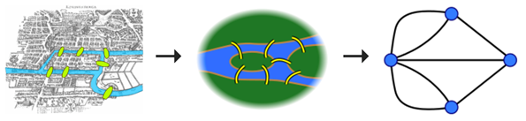

Родоначальником теории графов считается Леонард Эйлер. В 1736 году в одном из своих писем он формулирует и предлагает решение задачи о семи кёнигсбергских мостах, ставшей впоследствии одной из классических задач теории графов. Термин «граф» впервые ввел Сильвестр Джеймс Джозеф в 1878 году в своей статье в Nature.
Задача о мостах Кенигсберга.
Решение
На упрощённой схеме города (графе) мостам соответствуют линии (ребра графа), а частям города — точки соединения линий (вершины графа). В ходе рассуждений Эйлер пришёл к следующим выводам:

рис.2
1.Число нечётных вершин (вершин, к которым ведёт нечётное число рёбер) графа должно быть чётно. Не может существовать граф, который имел бы нечётное число нечётных вершин.
2.Если все вершины графа чётные, то можно, не отрывая карандаша от бумаги, начертить граф, при этом можно начинать с любой вершины графа и завершить его в той же вершине.
3.Если ровно две вершины графа нечётные, то можно, не отрывая карандаша от бумаги, начертить граф, при этом можно начинать с любой из нечётных вершин и завершить его в другой нечетной вершине.
4.Граф с более чем двумя нечётными вершинами невозможно начертить одним росчерком.
Граф кёнигсбергских мостов имел четыре нечётные вершины (то есть все) — следовательно, невозможно пройти по всем мостам, не проходя ни по одному из них дважды.